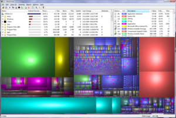
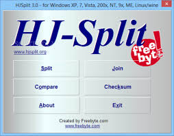
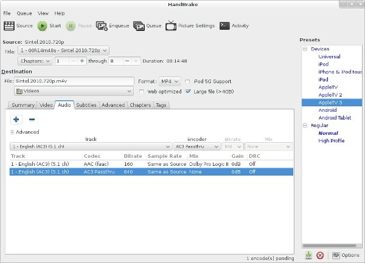
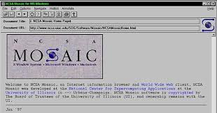

Welcome to website of VašekCZ230! |
|||
Menu |
WinDirStat (Windows Directory Statistics) is a disk usage statistics viewer and cleanup tool for Microsoft Windows. It provides users with a visual representation of disk space usage on their computer's hard drives, allowing them to identify large files and directories that may be consuming significant storage space. 
HJSplit is a popular file splitting and joining utility software primarily used in Windows environments. It's designed to split large files into smaller segments and recombine them afterward. 
HandBrake is a popular open-source video transcoder software that allows users to convert video files from one format to another. 
Mosaic 3.0 is a notable version of the Mosaic web browser, one of the earliest graphical web browsers available to the public. Mosaic played a significant role in popularizing the World Wide Web in the early 1990s. 
|
||
|
|
|||